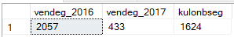
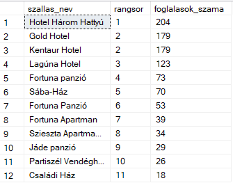
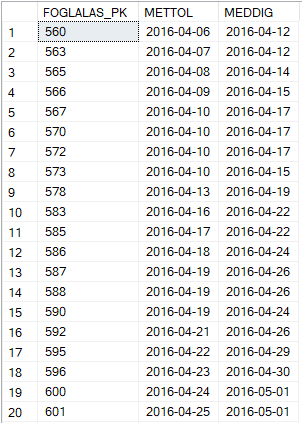
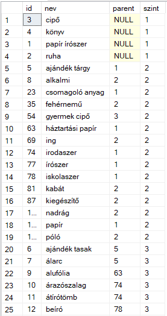
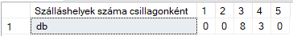

T-SQL CTE, Recursive CTE and Pivot
Advanced SQL Server examples using common table expressions, recursive logic, ranking, and pivot-based result transformation.
Overview
This project uses a sample database containing information about accommodation providers in Hungary, including hotels and other lodging facilities in different regions of the country. The dataset includes tables such as accommodations, rooms, guests, and bookings, which makes it suitable for demonstrating relational queries, analytical SQL functions, and reporting logic. The examples on this page use this dataset to showcase practical SQL Server querying techniques.
This page focuses on T-SQL techniques that make complex queries easier to structure and interpret. Common Table Expressions, or CTEs, are especially useful when a query needs to be broken into logical steps instead of writing everything in one large nested statement. The selected examples demonstrate how CTEs can be used for aggregation, ranking, filtering based on calculated values, recursive hierarchy traversal, and pivot-style result reshaping. These techniques are highly relevant for analytical SQL development and structured reporting tasks.
What This Project Demonstrates
Readable Query Design
CTEs make longer SQL logic easier to understand by separating the preparation step from the final result query.
Reusable Intermediate Results
Calculated or aggregated datasets can be named once and referenced immediately in the next SELECT statement.
Recursive Hierarchies
Recursive CTEs make it possible to walk through parent-child structures such as product categories or organizational trees.
Pivot Reporting
T-SQL can transform row-based data into a report-style matrix format directly inside the database engine.
Database Overview

Core T-SQL Concepts Used
WITH CTE → Aggregated Intermediate Result → Ranking / Filtering / Comparison → Recursive Expansion → PIVOT Transformation
CTE
A named temporary result set used inside a single statement to simplify more complex queries.
Recursive CTE
A special form of CTE that repeatedly joins back to itself to explore hierarchical data step by step.
Ranking
CTEs can be combined with window functions such as DENSE_RANK to build ordered analytical output.
Pivoting
Transforms detailed row values into summary columns for easier comparison in reports.
Selected Example Queries
The following examples were selected because together they show several different ways CTEs improve query structure: year comparison, ranking, average-based filtering, recursive hierarchy handling, and cross-tab style pivot reporting.
Example 1 — Comparing Guest Counts Between Two Years
This query first builds an aggregated yearly result inside a CTE, then compares the total guest count between 2016 and 2017. It is a clean example of using a CTE as a preparation layer for a final comparison query.
This pattern is useful when totals need to be calculated first and only then compared in a final output row.
WITH ev_vendeg_szam_CTE AS (
SELECT YEAR(mettol) AS ev,
SUM(felnott_szam + gyermek_szam) AS osszes_vendeg
FROM foglalas
WHERE YEAR(mettol) IN (2016, 2017)
GROUP BY YEAR(mettol)
)
SELECT
MAX(CASE WHEN ev = 2016 THEN osszes_vendeg END) AS vendeg_2016,
MAX(CASE WHEN ev = 2017 THEN osszes_vendeg END) AS vendeg_2017,
MAX(CASE WHEN ev = 2016 THEN osszes_vendeg END) -
MAX(CASE WHEN ev = 2017 THEN osszes_vendeg END) AS kulonbseg
FROM ev_vendeg_szam_CTE;

Example 1 Query Results
Example 2 — Ranking Accommodations by Number of Bookings
This example combines a CTE with DENSE_RANK() to produce a ranked list of accommodations based on how many bookings they received. It is a strong portfolio query because it joins multiple tables and generates business-style ranking output.
This is a good example of how CTEs and window functions can work together in a structured analytical query.
WITH RangSor_CTE AS (
SELECT
szh.szallas_id,
szh.szallas_nev,
COUNT(*) AS foglalasok_szama,
DENSE_RANK() OVER (ORDER BY COUNT(*) DESC) AS rangsor
FROM foglalas f
JOIN szoba sz ON szoba_fk = sz.szoba_id
JOIN szallashely szh ON sz.szallas_fk = szh.szallas_id
GROUP BY szh.szallas_id, szh.szallas_nev
)
SELECT szallas_nev, rangsor, foglalasok_szama
FROM RangSor_CTE;

Example 2 Query Results
Example 3 — Bookings Longer Than the Average Stay
This query calculates the average booking duration inside a CTE, then returns only the bookings that are longer than that average. It is a simple but effective example of separating a reference metric from the final filtered result.
This approach makes the query easier to read than repeating the same aggregate expression directly inside the WHERE clause.
WITH cte_atlag(atlag) AS (
SELECT AVG(DATEDIFF(day, METTOL, MEDDIG))
FROM Foglalas
)
SELECT FOGLALAS_PK, METTOL, MEDDIG
FROM Foglalas
WHERE DATEDIFF(day, METTOL, MEDDIG) > (SELECT atlag FROM cte_atlag);

Example 3 Query Results
Example 4 — Recursive CTE for Product Category Levels
This is one of the strongest examples on the page because it uses a recursive CTE. The query starts from top-level categories and then repeatedly joins child categories to assign their hierarchy level.
Recursive logic like this is especially useful when working with nested category structures, organizational charts, or tree-shaped master data.
WITH cte_kat (id, nev, parent, szint) AS
(
SELECT kat_id, kat_nev, szulo_kat, 1
FROM Termekkategoria
WHERE szulo_kat IS NULL
UNION ALL
SELECT tk.kat_id, tk.kat_nev, tk.szulo_kat, ck.szint + 1
FROM Termekkategoria tk
JOIN cte_kat ck ON tk.szulo_kat = ck.id
)
SELECT id, nev, parent, szint
FROM cte_kat
ORDER BY szint, nev;

Example 4 Query Results
Example 5 — Pivot Table for Accommodation Counts by Star Rating
This query uses PIVOT to transform row-based accommodation data into a compact report format. Instead of returning one row per record, it shows how many accommodations exist in each star category.
This is a useful reporting pattern because it produces a presentation-friendly output directly in SQL Server.
SELECT 'db' AS 'Szálláshelyek száma csillagonként',
[1], [2], [3], [4], [5]
FROM (
SELECT szallas_ID, csillagok_szama
FROM szallashely
) AS Szálláshely
PIVOT(
COUNT(szallas_ID)
FOR csillagok_szama IN ([1], [2], [3], [4], [5])
) AS pivottabla;

Example 5 Query Results
Why These Examples Are Strong
They Improve Readability
Each query becomes easier to read because the preparation logic is separated from the final result.
They Show Different CTE Use Cases
The selection includes aggregation, filtering, ranking, recursion, and data reshaping.
They Reflect Real SQL Tasks
These are the kinds of problems that often appear in reporting, exam tasks, and business-style query development.
They Are Portfolio-Friendly
The examples are compact enough to present visually, but still advanced enough to show strong SQL knowledge.
Key Takeaways
- CTEs make complex SQL easier to structure. They allow large problems to be solved in clearly separated logical steps.
- Recursive CTEs are especially powerful. They make hierarchical data analysis possible directly inside SQL Server.
- CTEs work very well with ranking and filtering. They provide a clean foundation for analytical result sets.
- Pivoting improves report readability. It transforms transactional row data into a matrix-style summary that is easier to present.
Navigation
This page is part of the T-SQL portfolio section and focuses on CTE-based query design, recursive logic, and pivot reporting.